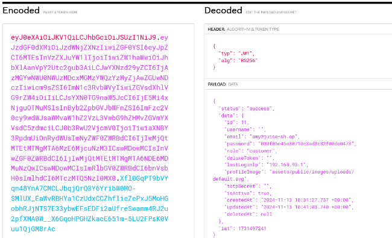

En esta vulnerabilidad vamos a necesitar un token JSON, que es como un paquete digital de
información.
Iniciamos sesión con cualquier usuario y si hemos prestado atención a la traza de peticiones que hace
el cliente al servidor en las
anteriores vulnerabilidades vemos que hay unas peticiones interesantes que preguntan “whoami”.
Para ver más claramente antes de modificar nada lo que hace esta función en el navegador si
abrimos el modo developer y vamos a la pestaña de network podemos ver que es lo que se le está
pasando a “whoami” en forma de json.
Básicamente es la identificación del usuario, es decir el token JSON que lo identifica dentro de
todas
las funciones de la web.
Bueno pues si vamos a la petición http que realiza vamos a poder ver el token.
Si buscamos información previa sobre cómo funciona un JWT encontramos una web donde tenemos
tanto
documentación como una aplicación para "decodificar" el contenido de este token.

Decodificación del token JWT
Aquí vamos a modificar entonces el email a rsa_lord@juice-sh.op y el algoritmo de encriptación de
RS256 a HS256.
"RS256 (Firma RSA con SHA-256) es un algoritmo asimétrico que usa un par de claves
pública/privada: el proveedor de identidad tiene una clave privada (secreta) que usa para generar la
firma, y el consumidor del JWT recibe una clave pública para validar la firma. Como la clave
pública,
a diferencia de la privada, no necesita mantenerse segura, la mayoría de los proveedores de
identidad la hacen fácilmente disponible para que los consumidores la obtengan y usen
(normalmente a través de una URL de metadatos).
HS256 (HMAC con SHA-256), por otro lado, implica una combinación de una función hash y una
(única) clave secreta que se comparte entre las dos partes para generar el hash que servirá como
firma. Como se usa la misma clave tanto para generar la firma como para validarla, hay que tener
cuidado para asegurar que la clave no se vea comprometida.
En este punto suponemos que realizando un ataque de web discovering encontramos un directorio
llamado “encryptionkeys” donde se encuentra la llave RSA pública.
Para crear la firma usamos esta herramienta y la clave
pública que
encontramos en el directorio “encryptionkeys”.
En texto plano debemos introducir los datos del token que teníamos de color rosado en la web
anterior JWT sin la parte azul que pertenece a la firma
En la secret key introducimos el RSA public key.
Marcamos como sha256 y que el encoder sea base64.
Esa llave la vamos a llevar a cyberchef para hacerla “URL safe”
Es importante primero decodificar de base64 estándar y luego codificar a base64url safe.
Copiamos la salida y la modificamos directamente en el token reemplazando la zona azul.
Ahora si podemos copiar el token y modificar la petición en burpsuite.